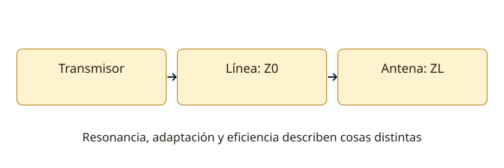

Lección 13 de 16
Antenas, líneas y adaptación
Relaciona longitud, polarización, impedancia y ROE sin confundir adaptación con alcance o eficiencia.
Onda y antena
Una onda electromagnética tiene campos eléctrico y magnético y transporta energía. En el espacio libre, su velocidad es aproximadamente 300.000 km/s: λ(m) ≈ 300/f(MHz). La polarización describe la orientación del campo eléctrico. Una antena convierte energía guiada en radiada y viceversa. Su patrón, impedancia, eficiencia y polarización son propiedades diferentes; ninguna lectura aislada las resume todas.
Dipolo, vertical y Yagi
Un dipolo de media onda tiene dos brazos y una longitud física algo menor que λ/2 por efectos del conductor y entorno. La aproximación 143/f(MHz) entrega su longitud total en metros para un punto inicial frecuente; no sustituye el ajuste. Una vertical de cuarto de onda necesita un retorno adecuado, como radiales o plano conductor. Una Yagi combina elemento excitado, reflector y directores para concentrar la radiación en ciertas direcciones. Un patrón omnidireccional en azimut no significa radiar igual hacia arriba y abajo.

Resonancia e impedancia
La impedancia de entrada combina resistencia y reactancia. La parte resistiva incluye resistencia de radiación y pérdidas; solo la primera representa potencia radiada. En resonancia la reactancia de entrada se anula, pero la resistencia no tiene por qué ser 50 Ω. La longitud eléctrica depende de geometría, velocidad de propagación y carga; una antena físicamente corta puede tener carga inductiva y pérdidas importantes. Altura, suelo y objetos cercanos modifican impedancia y patrón.
Líneas de transmisión
Un coaxial es una línea no balanceada; una línea paralela puede ser balanceada. La impedancia característica Z0 no es su resistencia óhmica medida con multímetro. El factor de velocidad determina la longitud de onda dentro del cable: λlínea = VF × λlibre. La atenuación depende de frecuencia, longitud y construcción. Un balun adapta balance y/o impedancia según su diseño; un choque de modo común limita corriente exterior indeseada, no cumple automáticamente cualquier transformación.
Reflexión y ROE
El coeficiente de reflexión en la carga es Γ = (ZL−Z0)/(ZL+Z0). La ROE = (1+|Γ|)/(1−|Γ|). La fracción de potencia reflejada ideal es |Γ|². Una ROE de 1:1 indica adaptación en el plano de medida; también una carga ficticia puede darla sin radiar de forma útil. Un cable con pérdidas puede ocultar parte de la reflexión: mide y anota dónde está el instrumento.
Ganancia y ajuste
dBi compara con un radiador isotrópico; dBd, con un dipolo de media onda ideal, con diferencia aproximada de 2,15 dB. Ganancia en una dirección se obtiene redistribuyendo radiación y depende de pérdidas. Para ajustar, instala en condiciones representativas, calibra el analizador en el plano de referencia y observa resistencia, reactancia y ROE frente a frecuencia. Un acoplador junto al transmisor no elimina la desadaptación ni las pérdidas que ya existen en la línea.
Resuelve paso a paso
Longitud inicial
A 7,1 MHz: λ ≈ 42,25 m. Un dipolo inicial con 143/f mide unos 20,14 m en total y 10,07 m por brazo. Es un cálculo inicial: el montaje real requiere ajuste.
ROE y potencia reflejada
ROE 2:1: |Γ| = (2−1)/(2+1) = 1/3. Potencia reflejada ideal = 1/9 ≈ 11,1%. No significa que exactamente 50% de la potencia se pierda.
Comprueba lo aprendido: ¿Una antena resonante tiene necesariamente una impedancia de 50 Ω?
No. Resonancia indica reactancia nula en ese punto; su resistencia de entrada puede ser diferente de 50 Ω.
Preguntas oficiales de este tema
Selecciona una alternativa y pulsa «Comprobar respuesta». Si fallas, podrás ver la respuesta correcta para seguir aprendiendo. Las preguntas con incidencias documentales se muestran solo para consulta y no se califican.
Continúa tu recorrido
Fuentes de estudio: programas técnicos y banco SUBTEL, apéndices A–E, versión 06/12/2020, y sus solucionarios oficiales. Reglamentación: Decreto 523, versión 21/06/2013; evaluación: Resolución Exenta 2620/2023. Revisión documental: 11/11/2026. Explicaciones, cálculos y esquemas didácticos de RUFCOM. Consultar documentos oficiales.